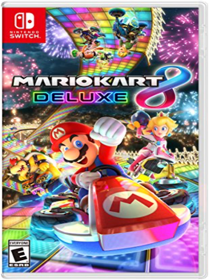
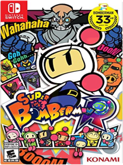
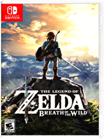
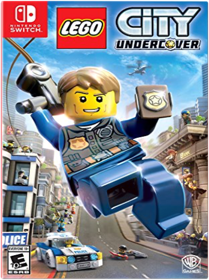

Mario Kart 8 Deluxe B01MYBZ4A9Nintendo Switch Software Mario Kart 8 Deluxe. Hit the road with the definitive version of Mario Kart 8 and play anytime, anywhere! Race your friends or battle them in a revised battle mode on new and returning battle courses. Play locally in up to 4-player multiplayer in 1080p while playing in TV Mode. Every track from the Wii U version, including DLC, makes a glorious return. Plus, the Inklings appear as all-new guest characters, along with returning favorites, such as King Boo, Dry Bones, and Bowser Jr.! Super Bomberman R KonamiB01N9RAP7MSuper Bomberman R makes full use of the Nintendo Switch system capabilities, which enables gamers to play wherever, whenever and with whomever they choose. Super Bomberman R offers a 'Battle' mode where up to eight players are dropped within a maze until the 'last man standing' is declared the winner. There is also a 'Story' mode where one to two players work cooperatively to clear a series of 50 stages in order to save the galaxy. The Legend of Zelda: Breath of the Wild NintendoB01MS6MO77Step into a world of discovery, exploration, and adventure in The Legend of Zelda: Breath of the Wild, a boundary-breaking new game in the acclaimed series. Travel across vast fields, through forests, and to mountain peaks as you discover what has become of the kingdom of Hyrule in this stunning Open-Air Adventure. Now on the Nintendo Switch console, your journey is freer and more open than ever. Take your system anywhere, and adventure as Link any way you like.Discover a world as never before seen: by making your own path, choices, and consequencesIngenuity is the key to survival: find multiple solutions to tons of dynamic puzzlesSurprises hide around every corner: scavenge weapons, armor, plants, animals, and moreLive off the land: find weapons and armor, cook food, and brew elixirsUtilize special technology: the in-game Sheikah Slate controls objects and enemies in fun waysGear up: many weapons and armor have unique stats, resistances, effects, and durabilityShrines offer hundreds of clever challenges even veterans won’t see comingCompatible amiibo include the Wolf Link amiibo figure, figures from the Legend of Zelda 30th Anniversary amiibo series, and figures from The Legend of Zelda: Breath of the Wild amiibo series. Each one will offer Link in-game items that may just come in handy. Lego City Undercover Warner Home Video - GamesB01MS6KPOHJoin the Chase! In LEGO CITY Undercover, play as Chase McCain, a police officer who's been tasked with going undercover to hunt down the notorious - and recently escaped - criminal Rex Fury and putting an end to his city-wide crime wave. With two player co-op, friends can explore the sprawling open-world metropolis that is LEGO City, with more than 20 unique districts to investigate, car thieves to bust, hilarious movie references to discover, vehicles to drive, and hundreds of collectibles. LEGO CITY Undercover brings together witty, original storytelling with signature LEGO humor to create a fun-filled experience for players of all ages to enjoy. |